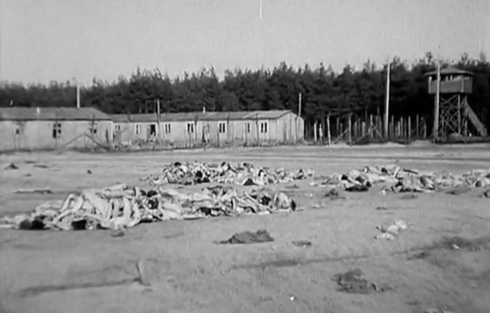
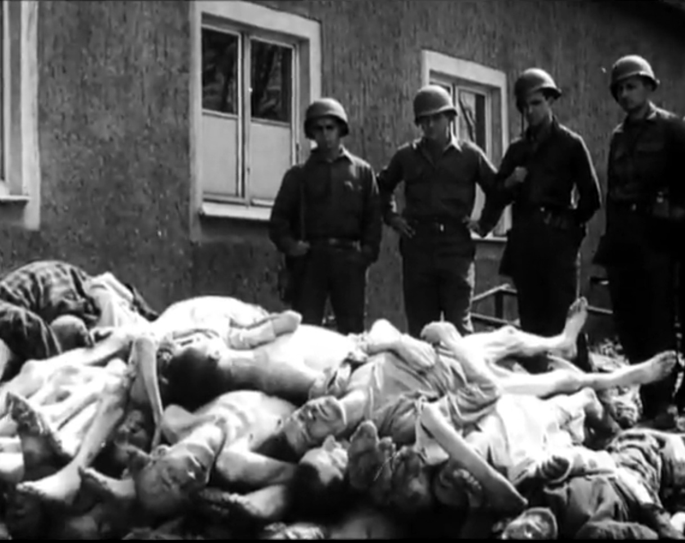

|
По просьбе поискового отряда «Поколение» г. Твери публикуем сведения о советских военнопленных, погибших в лагере Берген-Бельзен, родившихся и призывавшихся из города Калинина.
Волков Николай Карпович род. 23 апреля 1917 г. в дер. Новое Тургиновского (Калининского) района Калининской области. Жена Мария Андреевна, г. Калинин, ул. С. Перовской, д. 35, кв. 2. Погиб в лагере 17 мая 1942 г. В Книге памяти Тверской области увековечен как пропавший без вести в мае 1942 г.
Данилов Иван Григорьевич род. 20 февраля 1907 г. в г. Калинине. Жена Ефросинья Ивановна, г. Калинин, пр-т Калинина, д. 11, кв. 51 (Республиканская 15/9). Погиб в лагере 27 декабря 1941 г. В Книге памяти Тверской области увековечен как пропавший без вести в марте 1942 г.
Зайцев Василий Петрович род. 28 февраля 1895 г. в дер. Боженки Пролетарского сельсовета Торжокского района Калининской области. Жена Зайцева А.П., г. Калинин, пер. Трудолюбия, 9. Призван Пролетарским РВК г. Калинина 12 июня 1941 г. Погиб в лагере 22 ноября 1941 г. В Книге памяти Тверской области увековечен как пропавший без вести в феврале 1942 г.
Комков Константин Иванович род. 15 июля 1920 г. в д. Смертино Фалевского сельсовета Кашинского р-на Калининской области. Адрес для переписки: г. Калинин, 2-й Нобилевский пер., д. 4, кв. 2, Комковой И. Погиб в лагере 5 июня 1944 г. В Книге памяти Тверской области увековечен как пропавший без вести в марте 1943 г.
Чижиков Алексей Яковлевич род. 4 февраля 1906 г. в дер. Владычня Хмельниковского сельсовета Лихославльского района Калининской области. Мать Маланья Алексеевна. Жена Ракова Татьяна, г. Калинин, Кировский пос., д. 8, кв. 2. Погиб в лагере 3 января 1942 г. В Книге памяти Тверской области увековечен как пропавший без вести в сентябре 1941 г.
Тихонов Алексей Алексеевич родился 10.03.1921 Саратовская обл., Балашов. Солдат. Попал в плен 04.07.1941 Берген-Бельзен. Погиб в плену 31.01.1942 Добрынина Валентина Алексеевна, г. Калинин, ул. Фурманова 27, кв. 12
Шамин Георгий Иванович (в карте военнопленного - Шавин) род. 24 августа 1908 г. в дер. Пушкино Тургиновского района Калининской области. Жена Клавдия Федоровна, г. Калинин, ул. Возмездия, д. 32. Призван Центральным РВК г. Калинина 5 июля 1941 г. Погиб в лагере в 1942 г. В Книге памяти Тверской области увековечен как пропавший без вести в феврале 1942 г.
Просьба довести до родственников погибших информацию о месте гибели и захоронения на кладбище военнопленных Хёрстен (Нижняя Саксония). Если такие родственники будут установлены, сведения о них просим сообщить нам по телефонам 8(4822) 35-70-18, 8 903 806 50 87 или по электронной почте nz65@inbox.ru , poisk@rtkom.ru


|